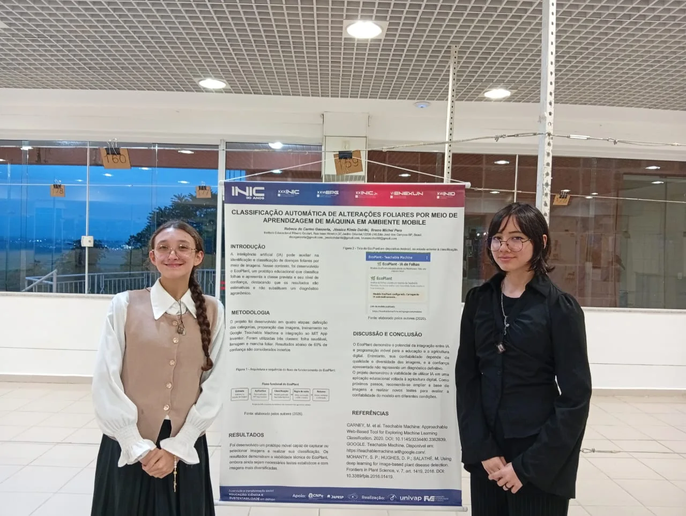

Uma boa pergunta
Olhar para o cotidiano e encontrar algo que merece ser investigado.
MÁXIMU’S NO INIC 2025 / 2026
Da curiosidade à pesquisa. Da sala de aula ao encontro científico. Nossos estudantes têm ideias para compartilhar com o mundo.
A ciência também se aprende fazendo.
UM ENCONTRO COM A CIÊNCIA
O INIC é o Encontro Latino-Americano de Iniciação Científica da Univap: um espaço para apresentar pesquisas e trocar conhecimentos.
Ao investigar um problema, organizar dados e conversar sobre resultados, o estudante exercita o pensamento crítico, a comunicação e o trabalho em equipe. Cada apresentação é uma oportunidade de aprender e ganhar confiança.
Conheça o evento na Univap (abre em nova aba)Olhar para o cotidiano e encontrar algo que merece ser investigado.
Pesquisar, testar caminhos e aprender com os resultados.
Apresentar o trabalho, ouvir perguntas e construir novos conhecimentos.
NOSSO ÁLBUM
Um registro das apresentações,
das equipes e das conquistas.
25 fotografias para celebrar.

Use as setas, deslize no celular ou toque nas miniaturas. Toque em “Ampliar” para ver a foto inteira.
PLATAFORMA INIC 2027
Alunos, orientadores e coordenação acompanham o tema, as entregas e as conversas no mesmo lugar.
Cadastre o tema, escolha seu orientador e acompanhe o aceite dos convites.
Um cronograma inicial organiza o ano. O orientador ajusta as datas e cada conclusão atualiza o progresso.
Mensagens e recados ficam junto ao projeto, com acesso apenas à equipe e à coordenação.
BIBLIOTECA DE PESQUISAS
Encontre um tema, conheça os autores
e abra o artigo nos anais oficiais.
Leitura livre. Sem cadastro.
Trabalhos com Taynara Alves ou Bruno Michel Pera na autoria, na orientação ou em menções identificadas no texto. A seleção inclui a Máximu’s e outras instituições, identificadas em cada publicação.
Carregando biblioteca…
Tente outro tema ou limpe os filtros para explorar a biblioteca.
A seleção foi conferida em 05/11/2026. Foram pesquisadas as variantes “Taynara Alves”, “Taynara Alves de Carvalho”, “Bruno Michel Pera”, “Bruno Michel Pêra” e “Bruno Michael Pera” nos registros oficiais. Cada artigo da lista tem um PDF oficial verificado.
A identificação considera autoria, orientação e menções explícitas nos documentos, com a relação indicada junto ao trabalho. Divergências entre o cadastro e o PDF são indicadas junto ao trabalho. Os resumos desta página são apresentações breves do tema; consulte o artigo para ler métodos e resultados.
Os trabalhos de outras instituições estão incluídos por terem os professores pesquisados na autoria, na orientação ou em menções identificadas no texto. Eles não são apresentados como produção da Máximu’s.
ESCOLA + FAMÍLIA
Escolha um artigo com seu filho e comece por uma pergunta:
“O que fez você querer pesquisar esse assunto?”